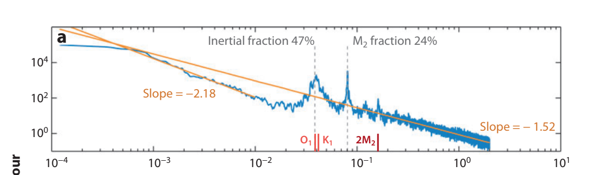

Internal gravity waves
Contents
Internal gravity waves¶
An important class of waves in the ocean (and atmosphere) are internal gravity waves, waves which appear in stratified fluids, with a density increasing with depth, so that bouyancy forces act on fluid parcels. (For frequencies close to the “inertial frequency” \(f = 2\Omega\sin\theta\), where \(\Omega\) is the rotational frequency of he earth, and \(\theta\) the latitutde, these are called inertia-gravity waves; in these the Coriolis foce plays an important role in the wave dynamics.)
In the ocean, the main driver of such waves is a combination of wind exciting waves at the inertial frequency, and tidal forcing interacting with complex bottom topography. Subsequent nonlinear interactions in the ocean – interactions between waves, interactions between waves and turbulent motion – generates a near-continuum of gravity waves at every frequency between the inrtial frequency and the Brunt-Väisälä frequency which we will define below. This continuum is known as the Garrett-Munk continuum (see for example [Garrett and Munk, 1979] and prior papers by those authors therein. A nice review of internal waves and this continuum can be found in this out-of-print article by Walter Munk.)

Kinetic energy as a function of frequency, measured from a mooring at 128m depth along the Mid-Atlantic Ridge. Figure taken from Fig. 1 of [Ferrari and Wunsch, 2009].
Here we will ignore the effects of the earth’s rotation and concentate on bouyancy-driven waves which, as we will see, already leads to unexpected behavior.
Equations of motion¶
We start from a background state in which he fluid is at rest, and the density has a profile \(\rho_0(z)\). The only nontrivial equation is the \(z\) component of the Navier-Stokes equation,
(The other components of the equation simply require \(p_0\) to have no \(x\)- or \(y\)-dependence.
We will consider perturbations which are independent of the \(y\) direction, and controlled by a small parameter \(\epsilon\). Thus,
Now we can insert these into the Navier-Stokes equations, the incompressibility equations, and the equation for mass conservation. Keeping only the \({\cal O}(\eps)\) terms, we find:
The complication here is that \(\rho_0(z)\), \(p_0(z)\) can have a complicated dependence on \(z\).
We next work by sepaation of variables. Since these equations are linear in \(x,t\) and the coefficients do not depend on these, we look fo solutions of the form \(\theta(x,z,t) = {\hat \theta}(z) e^{i\omega t - i k x}\), where \(\theta\) stands for any of the fields \(u_1,w_1,\rho_1,p_1\). The amobe equations become:
Note some sign differences from the Acheson, because I flip the signs of \(\omega\) and \(k\) relative to it. We can use the first and third equations to eliminate \({\hat u}_1\), \({\hat p}_1\), and the second equation to eliminate \({\hat \rho}_1\), to finally find:
where \(N^2 = - \frac{g}{\rho_0} \partial_z \rho_0\) is the (square of) the aforementioned Brunt-Väisälä frequency. Note that \(N^2\) is positive when \(\rho_0\) is decreasing as \(z\) increases, coresponding to the case that bouyancy is a restoring force.
For general stratificaion, the perurbation equations are still notrivial due to the \(z\)-dependence of the coefficients. We will choose \({\hat \rho}_0 = C e^{- z/H}\) with \(C,H\) constants. The equation for the vertical velocity becomes
Finally, we can set \({\hat w}_1 = e^{\alpha z} W\), where \(W\) is a constant. The above equation then becomes
Slving the quadratic equation:
Defining \(i m = \alpha - \frac{1}{2H}\) so that \({\hat w}_1 = W e^{\frac{y}{2H} + i \omega - i k x - i m z}\) and solving for \(\omega\) to get the dispersion relation, we find:
Note first that, as stated, \(N^2 > 0\) is necessary for stability – for the perturbation to oscillate rather than run away. \(N^2 < 0\) would mean that \(\omega\) was imaginary; a general solution will grow exponentially, and perturbation will fail.
This is a highly anisotropic dispersion relation with the unusual property that the group velocitiy points along the wavefronts. The wavefronts are the curves pependicular to \({\vec k}\). The group velocity for given \(k,m\) is:
This is clearly orthogonal to \({\vec k} = k {\hat x} + m {\hat z}\), and points downwards when the wave is travelling up and towards positive \(x\).